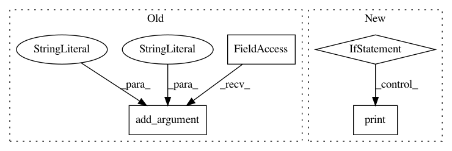

aeb516494daa207720b428072ab49eeea7bfff75,scripts/text_generation/sequence_sampling.py,,,#,33
Before Change
help="Beam size in the beam search sampler.")
parser.add_argument("--alpha", type=float, default=0.0, help="Alpha in the length penalty term.")
parser.add_argument("--k", type=int, default=5, help="K in the length penalty term.")
parser.add_argument("--bos", type=str, default="I", nargs="+")
parser.add_argument("--eos", type=str, default=".")
parser.add_argument("--max_length", type=int, default=20, help="Maximum sentence length.")
parser.add_argument("--print_num", type=int, default=3, help="Number of sentences to display.")
parser.add_argument("--gpu", type=int, default=None,
After Change
if args.gpu is not None and args.gpu < mx.context.num_gpus():
ctx = mx.gpu(args.gpu)
else:
if args.gpu:
print("Specified GPU id {} does not exist. Available //GPUs: {}. Using CPU instead."\
.format(args.gpu, mx.context.num_gpus()))
ctx = mx.cpu()
assert 0 < args.print_num <= args.beam_size,\
"print_num must be between {} and {}, received={}".format(1, args.beam_size, args.print_num)
In pattern: SUPERPATTERN
Frequency: 3
Non-data size: 4
Instances
Project Name: dmlc/gluon-nlp
Commit Name: aeb516494daa207720b428072ab49eeea7bfff75
Time: 2019-06-13
Author: xshiab@ust.hk
File Name: scripts/text_generation/sequence_sampling.py
Class Name:
Method Name:
Project Name: NervanaSystems/nlp-architect
Commit Name: 650a9bb35b4b0796ee90c5ac0b498af54c32c2e3
Time: 2018-05-08
Author: peteriz@users.noreply.github.com
File Name: core_models/intent_extraction/interactive.py
Class Name:
Method Name:
Project Name: OpenNMT/OpenNMT-py
Commit Name: a584d6f73cfafa81c9e872ae6e9beb2feff32574
Time: 2016-12-28
Author: alerer@fb.com
File Name: OpenNMT/train.py
Class Name:
Method Name: